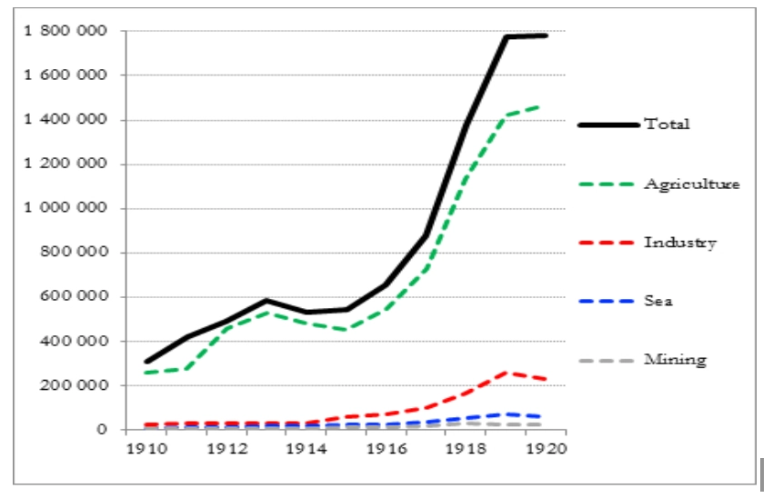
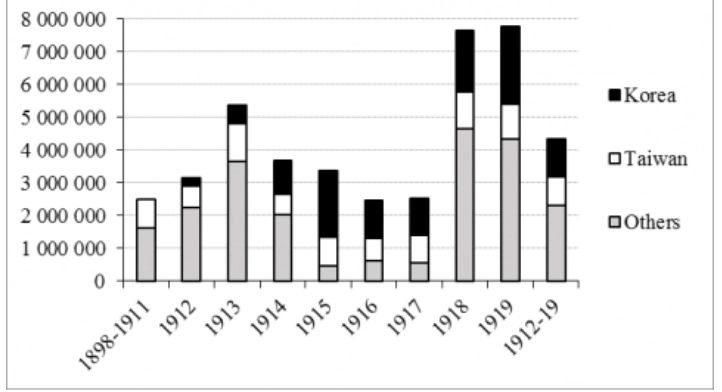
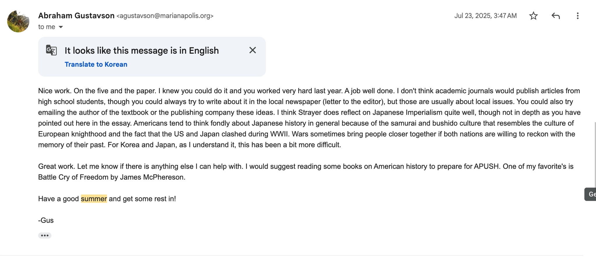
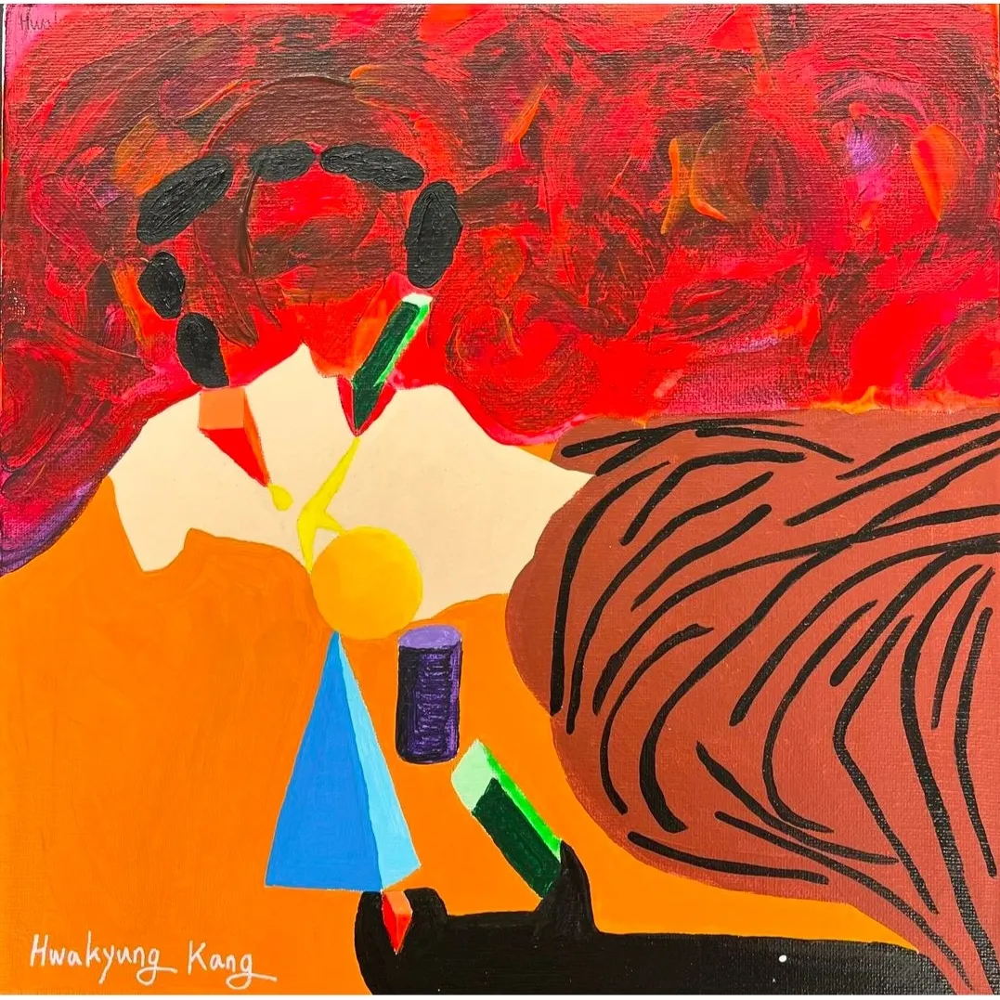
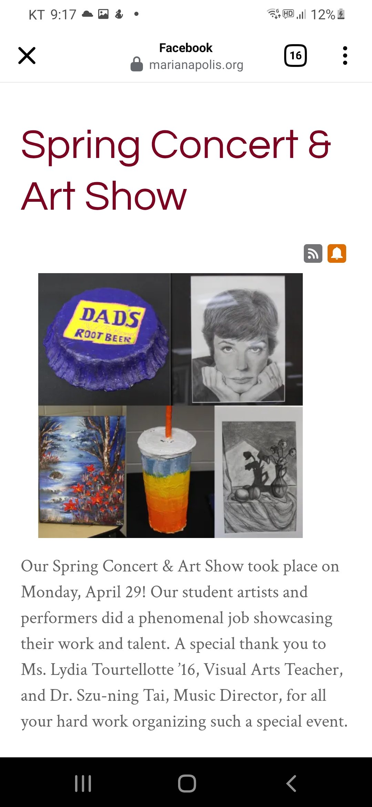
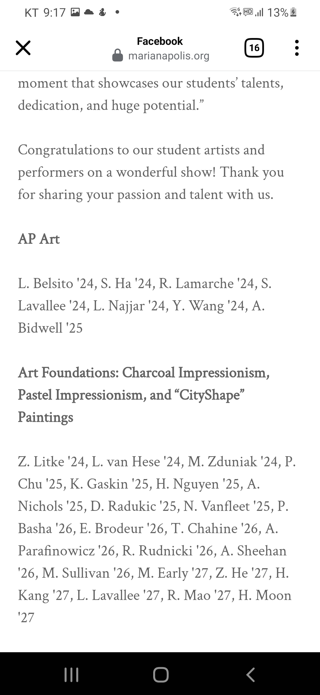
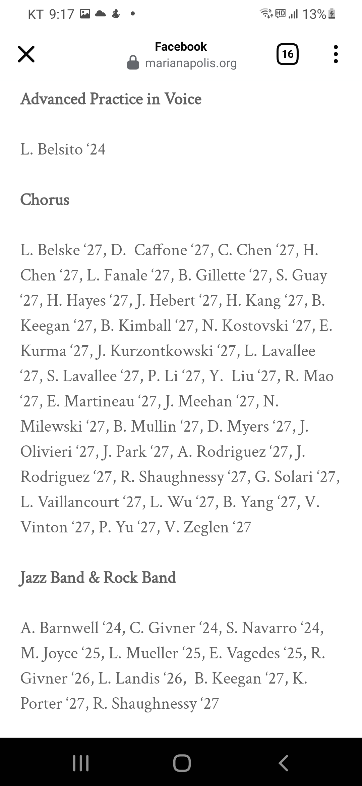

Academic & Creative Work
Selected writing and visual work from high school.
Not Development but Exploitation
Independent historical response to a textbook passage · Summer 2025
During AP World History, I stopped at a sentence in Ways of the World that said Japanese colonial rule had “arguably contributed” to Korea’s urban, commercial, and industrial growth. The passage made me ask whether economic growth alone should be called a country’s development. I wanted to look more carefully at how that growth was produced, who controlled the land and labor behind it, and whether Korean people had meaningful economic agency within the system.
After the course ended, I emailed my AP World History teacher and asked if he would be willing to give feedback on a written response. During the summer, I wrote a first draft that examined the Company Law, the Land Survey Ordinance, Japanese corporations such as the Oriental Development Company, and rice exports from colonial Korea.
In my draft, I argued that the Company Law restricted Korean independent economic activity, while the Land Survey Ordinance made it easier for colonial institutions and Japanese corporations, including the Oriental Development Company, to take control of land. I then examined how agricultural production and rice exports increased within this system.


Based on the sources I examined, I concluded that the increase in production and rice exports was connected to a colonial system that limited Korean economic independence and directed land and agricultural resources toward Japanese companies and markets. For that reason, I did not think growth figures alone could be used as evidence that Japanese colonial rule represented development for Korea.
This project taught me that statistics about production or exports can show economic change, but they do not by themselves prove that a society was developing for its own people. My question was not whether some output or infrastructure increased under colonial rule. It was whether those facts alone were enough to describe the period as Korea’s development.
To evaluate historical change more carefully, I learned to ask who held power, who bore the cost, who received the profit, and who was able to make decisions about their own society.

This was my first attempt to question a textbook’s framing and build a response with sources, graphs, and my own reasoning. I also sketched an early plan for a longer project about colonial modernization, historical narratives, and the way framing can shape what people notice in history.
Selected Classroom Writing
Life of Pi Reading Journal · Honors Literary Genres · 9th grade
While reading Life of Pi, I kept returning to the relationship between faith and doubt. I was interested in why Pi could hold different religious beliefs together, and why two different stories could both matter even when people disagreed about which one was “true.” This journal was one of my first places to write questions that did not have one clear answer.
Marco Polo and Ibn Battuta · AP World History · 10th grade
In this response, I compared Marco Polo’s position as a visitor with Ibn Battuta’s position as a Muslim traveler moving within the Islamic world. I began to notice that people do not simply report what they see. Their purpose, beliefs, and relationship to a place can shape what they notice and how they describe it.
Market Revolution DBQ · AP U.S. History · 11th grade
While studying the Market Revolution, I was interested in how commercial growth connected different regions while also making their conflict over slavery stronger. I wrote about factory labor, transportation, temperance, and women’s work, but I argued that the growing sectional conflict over slavery was the most important social change of the period. This helped me see that economic progress can bring different consequences for different groups of people.
The Great Gatsby and Modern American Dream · Honors American Literature · 11th grade
In my essay on The Great Gatsby, I connected Gatsby’s dream of appearing wealthy with modern influencer culture. I wondered why people sometimes use luxury, popularity, or an “old money” image to hide anxiety about money, success, and the future. Gatsby made me think about how an image can become something people chase even when it does not make them feel secure.
Creative Work
Art Foundations exhibition · 9th grade
I made this work during my first months at boarding school. The dark forms above the figure represent the uncertainty and pain I felt then. The yellow figure and the colored shapes represent my attempt to create meaning rather than wait for it to be given.
I connected the work to the idea of eternal recurrence: moving through difficulty again and again, but returning with a little more strength. For me, creating meaning was a form of resistance.

Pastel landscape study · Art Foundations · 9th grade
Art Foundations Exhibition & Chorus · 9th grade


